KDE-Arbeitsfläche
Dieser Artikel wurde für die folgenden Ubuntu-Versionen getestet:
Ubuntu 14.04 Trusty Tahr
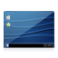 Die Arbeitsfläche der KDE Community ist Bestandteil von Plasma. Sie ist eine modular aufgebaute Anwendung, welche unter anderem dazu verwendet werden kann, den Desktop oder auch die Kontrollleiste darzustellen. Die Arbeitsfläche besteht aus Miniprogrammen, sogenannten Plasmoiden. Diese können auf der Arbeitsfläche frei platziert oder auch in der Kontrollleiste abgelegt werden. Genau genommen ist die Arbeitsfläche selbst auch nur ein Plasmoid, welches weitere Plasmoide aufnehmen kann, ein sogenanntes Containment. Allgemeine Informationen können im Artikel Plasma nachgelesen werden.
Arbeitsfläche einrichten¶
| 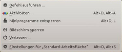 |
| Kontextmenü |
 Um die Arbeitsfläche einzurichten, muss der Konfigurationsdialog der Arbeitsfläche geöffnet werden. Dazu öffnet man das Kontextmenü der Arbeitsfläche. Hierbei ist es wichtig, direkt auf die Arbeitsfläche oder auf ein Plasmoid zu klicken. Klickt man auf die Kontrollleiste, werden nur die Optionen der Kontrollleiste angeboten. Im Kontextmenü der Arbeitsfläche gibt es einen Menüpunkt "Einstellungen für Standard-Arbeitsfläche", welcher den Konfigurationsdialog öffnet. Sofern man im Vorfeld bereits ein anderes Layout gewählt hat, heißt dieser Menüeintrag ggf. anders.
Um die Arbeitsfläche einzurichten, muss der Konfigurationsdialog der Arbeitsfläche geöffnet werden. Dazu öffnet man das Kontextmenü der Arbeitsfläche. Hierbei ist es wichtig, direkt auf die Arbeitsfläche oder auf ein Plasmoid zu klicken. Klickt man auf die Kontrollleiste, werden nur die Optionen der Kontrollleiste angeboten. Im Kontextmenü der Arbeitsfläche gibt es einen Menüpunkt "Einstellungen für Standard-Arbeitsfläche", welcher den Konfigurationsdialog öffnet. Sofern man im Vorfeld bereits ein anderes Layout gewählt hat, heißt dieser Menüeintrag ggf. anders.
| 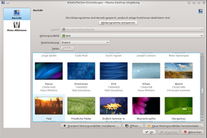 |
| Arbeitsflächen-Einstellungen |
Ansicht¶
Layout¶
Unter "Ansicht" hat man die Möglichkeit ein "Layout" auszuwählen. Ist dieser Punkt ausgegraut, müssen hierfür zuerst die Miniprogramme entsperrt werden. Zur Auswahl stehen verschiedene vordefinierte Layouts:
"Zeitungsanordnung" - Scrollbare Anordnung der Miniprogramme in Spalten
"Ordner" - Den Inhalt eines beliebigen Ordners auf dem Desktop anzeigen. Nachdem man dieses Layout aktiviert hat, erscheinen weitere Symbole für detaillierte Einstellungen ("Ort", "Symbole", "Filter").
"Standard-Arbeitsfläche" - Leere Arbeitsfläche, die durch Miniprogramme erweitert werden kann.
"Suchen und ausführen" - Anwendungsstarter mit Suchfeld. Nachdem man dieses Layout aktiviert hat, erscheinen weitere Symbole für detaillierte Einstellungen ("Suchmodule", "Hauptmenü", "Tastenzuordnung").
"Homerun" - Ein Vollbild Anwendungsstarter. Siehe auch Homerun Projektseite
 .
.
Neben den genannten Standard-Layouts ist es möglich weitere Layouts zu installieren. Möchte man seine Miniprogramme z.B. auf dem Desktop an einem Raster ausrichten oder gruppieren, installiert man das folgende Paket. Danach hat man in der Liste der Layouts zusätzlich "Gruppierung-" und "Gitteranordnung" zur Auswahl.
plasma-containments-addons
 mit apturl
mit apturl
Paketliste zum Kopieren:
sudo apt-get install plasma-containments-addons
sudo aptitude install plasma-containments-addons
| 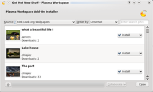 |
| Bilder herunterladen |
Hintergrundbild¶
Als Hintergrundbild stehen zur Auswahl:
"Animation" - Vordefinierte Animationen als Hintergrund.
"Bild" - Ein einzelnes Bild als Hintergrund. Über "Neue Hintergrundbilder herunterladen ..." können Bilder von der KDE-look.org
heruntergeladen werden."Diaschau" - Eine Diaschau aus den Systemhintergrundbildern oder eigenen Bildern. Die Zeit zum Wechseln des Bildes kann selbst definiert werden.
"Farbe" - Eine Farbe oder einen Farbverlauf als Hintergrund.
Weitere Layouts und Plugins erhält man nach der Installation von:
plasma-wallpapers-addons
mit apturl
Paketliste zum Kopieren:
sudo apt-get install plasma-wallpapers-addons
sudo aptitude install plasma-wallpapers-addons
Maus-Aktionen¶
Unter "Maus-Aktionen" können Mausereignisse auf der Arbeitsfläche (Tastendruck, Mausrad, etc.) und die daraus resultierende Aktion definiert werden. Beispielsweise kann das K-Menü angezeigt werden oder die Arbeitsfläche gewechselt werden.
Erscheinungsbild¶
Arbeitsflächeneffekte¶
KWin liefert eine Vielzahl an Effekten mit sich. Diese können über "Systemeinstellungen -> Arbeitsflächen-Effekte" konfiguriert werden. Weitere Informationen liefert der Artikel KWin/Arbeitsflächeneffekte.
Arbeitsflächendesign¶
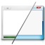 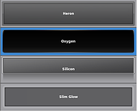 "Systemeinstellungen -> Erscheinungsbild der Arbeitsfläche" öffnet einen Konfigurationsdialog, der die Möglichkeit bietet, das Arbeitsflächen-Design zu konfigurieren. Neben der Auswahl des "Arbeitsflächen-Designs", welches das Aussehen der Miniprogramme ("Plasmoids") und der Kontrollleiste definiert, können über diesen Dialog die "Fensterdekoration", der "Startbildschirm" und das "Zeigerdesign" der Maus konfiguriert werden.
Design ändern¶
Um das Design zu ändern, wählt man den Tab "Design". Dort wird eine Vorschau des Designs angezeigt. Dies gibt ein Gefühl dafür, wie in etwa die Kontrollleiste aussehen würde. Nachdem man ein Design ausgewählt hat, kann man dieses über "Anwenden" aktivieren. Dabei wird sofort das Aussehen aller Plasmoids beeinflusst.
Über die Schaltfläche "Neues Design herunterladen..." können weitere Designs von KDE-look.org heruntergeladen werden.
Benutzerdefiniertes Design¶
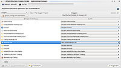 Um ein benutzerdefiniertes Plasma Design zu erstellen, wechselt man auf den Tab "Details". Hier werden nun alle anpassbaren Plasma-Elemente in einer Tabelle angezeigt. In der Spalte rechts von den Elementen steht eine Dropdown-Liste zur Verfügung, welche alle verfügbaren Designs enthält. Über die Schaltfläche "Anwenden" wird das benutzerdefinierte Design gespeichert.
Damit Plasma das benutzerdefinierte Design verwendet, muss auf dem Tab "Design" ganz oben "(Benutzerdefiniert)" ausgewählt werden.
Verhalten der Arbeitsfläche¶
Unter "Systemeinstellungen -> Verhalten der Arbeitsfläche" stehen die folgenden Einstellungen zur Verfügung:
"Aktivitäten" - Siehe hierzu Plasma/Aktivitäten
"Virtuelle Arbeitsflächen" - Anzahl, Name, etc. der virtuellen Arbeitsflächen festlegen.
"Bildschirmränder" - Allen Bildschirmrändern und -ecken können verschiedene Aktionen zugeordnet werden.
"Arbeitsbereich" - Hier kann der Arbeitsflächentyp definiert werden. Zur Auswahl steht "Desktop" oder "Netbook".
Allgemeine Bedienung¶
Dateien auf dem Desktop¶
Plasma implementiert im Auslieferungszustand nicht das klassische Dateien-auf-dem-Desktop-Verhalten. Hierzu kann entweder wie unter Ansicht beschrieben das Layout "Ordner" verwendet werden oder es kann das Miniprogamm "Ordneransicht" zur Arbeitsfläche hinzugefügt werden. Bei beiden Varianten lässt sich der anzuzeigende Ordner frei wählen.
Cashewnuss¶
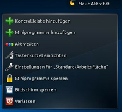 In der rechten oberen Ecke der Arbeitsfläche befindet sich eine kleine Schaltfläche mit dem Schriftzug "Neue Aktivität" mit dem Symbol einer Cashewnuss. Diese Schaltfläche wird als Cashewnuss/Werkzeugkasten bezeichnet. Sie stellt eine einfache Möglichkeit dar, den Desktop zu konfigurieren, ohne das Kontextmenü zu verwenden, und ist daher besonders gut geeignet für Eingabegeräte mit nur einer Schaltfläche, wie zum Beispiel Touchscreens. Sind die Miniprogramme entsperrt, lässt sich die Cashewnuss per Drag&Drop verschieben.
Klickt man auf die Schaltfläche, werden alle Fenster minimiert und es und ein kleines Fenster mit weiteren Optionen an. Die Optionen variieren je nachdem, ob die Miniprogramme entsperrt sind oder nicht. Es gibt die Möglichkeit neue Kontrollleisten oder Miniprogramme hinzu zu fügen, sowie die Aktivitäten und Tastenkürzel zu verwalten.
Dashboard¶
Dashboard ist die von Mac OS X bekannte Möglichkeit, alle Miniprogramme in den Vordergrund zu holen. Somit ist es möglich, sich auch die von Anwendungen verdeckten Plasmoide anzeigen zu lassen, ohne alle Anwendungen minimieren zu müssen. Auch ermöglicht das Dashboard eine leichtere Anordnung der Plasmoide und ein einfaches Hinzufügen neuer Elemente. Das Dashboard kann entweder die gleichen Miniprogramme zeigen, die auf der Arbeitsfläche sichtbar sind oder einen davon unabhängigen Satz. Die Einstellung hierzu findet sich unter "Systemeinstellungen -> Verhalten der Arbeitsfläche -> Arbeitsbereich -> Dashboard".
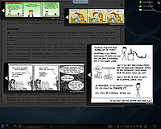 Das Dashboard kann mit dem Tastenkürzel Strg + F12 angezeigt werden. Zusätzlich gibt es in der Kontrollleiste ein Plasmoid, welches den Dashboard-Modus startet. Den Dashboard-Modus verlässt man entweder über das gleiche Tastenkürzel oder mit Esc .
Sofern der entsprechende Arbeitsflächeneffekt aktiviert ist, werden im Dashboard-Modus alle Anwendungen und die Arbeitsfläche abgedunkelt. Sind die Effekte nicht aktiviert, so wird nur die Arbeitsfläche angezeigt, jedoch nicht die geöffneten Anwendungen.
Miniprogramme¶
Miniprogramme hinzufügen¶
Plasmoide können über den "Miniprogramm hinzufügen"-Dialog hinzugefügt werden. Diesen öffnet man über die Cashewnuss oder über das Kontextmenü der Arbeitsfläche oder der Kontrollleiste. Um überhaupt Miniprogramme hinzufügen zu können, müssen die Miniprogramme entsperrt sein. Dies muss ggf. zuerst über die Cashewnuss oder das Kontextmenü durchgeführt werden. 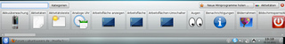
Um ein Plasmoid hinzuzufügen, klickt man im erscheinenden Dialog auf das Plasmoid und zieht es mittels Drag&Drop auf die Stelle der Arbeitsfläche oder der Kontrollleiste, an der das Plasmoid angezeigt werden soll.
Über den Dialog können auch neue Miniprogramme installiert werden. Dazu gibt es die Schaltfläche "Neue Miniprogramme holen", welche zwei Unterpunkte "Neue Miniprogramme herunterladen" und "Neues Miniprogramm aus lokaler Datei installieren" enthält.
Miniprogramme bearbeiten¶
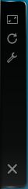 Jedes Plasmoid enthält ein Kontextmenü, über das - sofern vorhanden - Einstellungen vorgenommen werden können. Sind die Miniprogramme entsperrt, so gibt es weitere Möglichkeiten. Fährt man mit der Maus über ein Plasmoid, so wird ein Rahmen ähnlich einer Fensterdekoration mit mehreren Schaltflächen angezeigt. Der Rahmen ermöglicht, das Plasmoid mittels Drag & Drop auf der Arbeitsfläche zu verschieben.
Die oberste Schaltfläche erlaubt das Skalieren des Plasmoids. Dazu muss man mit der Maustaste auf die Schaltfläche klicken und die Maus bewegen. Wird gleichzeitig die Strg Taste gedrückt, so kann das Plasmoid frei skaliert werden. Über die zweite Schaltfläche kann das Plasmoid rotiert werden. Sofern das Plasmoid Konfigurationsmöglichkeiten bietet, wird eine Schaltfläche dafür angezeigt. Am unteren Rand befindet sich noch eine Schaltfläche, um das Plasmoid zu entfernen.
Problemlösungen¶
Plasma neu starten¶
Um die Arbeitsfläche und die Kontrollleiste neu zu starten, um z.B. eventuelle Anzeigefehler zu beheben, kann man Plasma beenden und im gleichen Schritt neu starten. Geöffnete Anwendungen bleiben dabei erhalten.
Dies geht über KRunner ( Alt + F2 ) und dem Befehl
killall plasma-desktop && plasma-desktop
Plasma auf Standardeinstellungen zurücksetzen¶
Um die Arbeitsfläche und die Kontrollleiste auf ihre Standardeinstellungen zurückzusetzen, muss man Plasma beenden, die Konfigurationsdateien löschen und Plasma wieder neu starten. Dabei gehen alle Einstellungen von Plasma verloren, d.h. alle Miniprogramme werden entfernt.
Zuerst muss Plasma beendet werden. Dies geht über KRunner ( Alt + F2 ) und dem Befehl
kquitapp plasma-desktop
Die Arbeitsfläche sollte nun nicht mehr sichtbar sein, d.h. der Hintergrund ist schwarz. Nun müssen die Konfigurationsdateien gelöscht werden. Dazu öffnet man die Konsole (über KRunner) und gibt folgende Befehle ein:
mv ~/.kde/share/config/plasma-desktop-appletsrc ~/.kde/share/config/plasma-desktop-appletsrc.backup mv ~/.kde/share/config/plasma-desktoprc ~/.kde/share/config/plasma-desktoprc.backup
Hierbei werden die Dateien nicht gelöscht, sondern nur umbenannt. Somit hat man ein Backup der Konfigurationsdateien.
Nun muss Plasma wieder über KRunner gestartet werden:
plasma-desktop
Links¶
KDE-look.org
- Hintergrundbilder, Plasma-Themes, Plasmoide, etc.Plasma
- Offizielle Plasma-WebseitePlasma
 - KDE Userbase Artikel zu Plasma
- KDE Userbase Artikel zu Plasma
- Erstellt mit Inyoka
-
 2004 – 2017 ubuntuusers.de • Einige Rechte vorbehalten
2004 – 2017 ubuntuusers.de • Einige Rechte vorbehalten
Lizenz • Kontakt • Datenschutz • Impressum • Serverstatus -
Serverhousing gespendet von